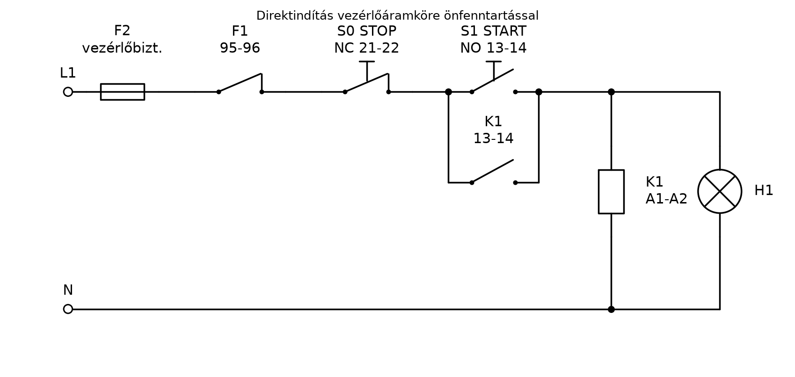
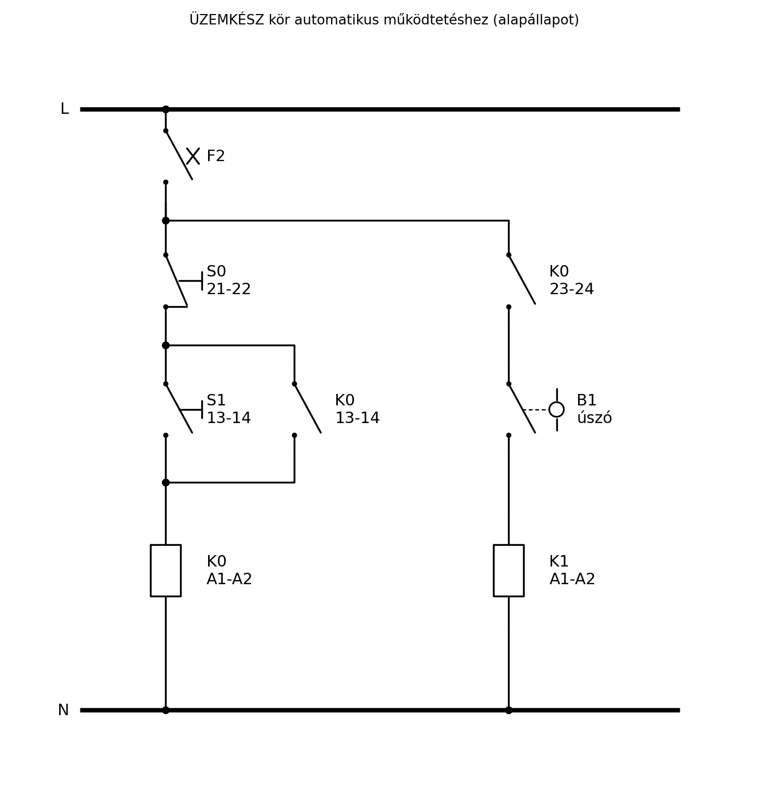
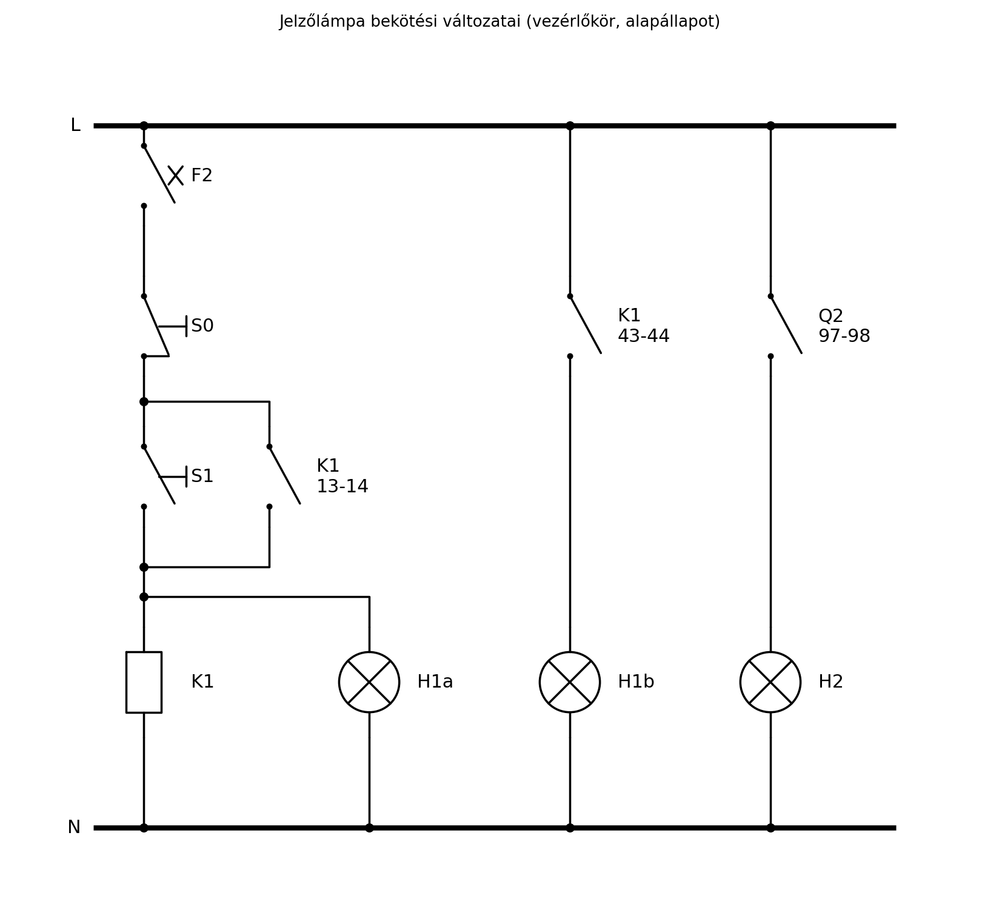
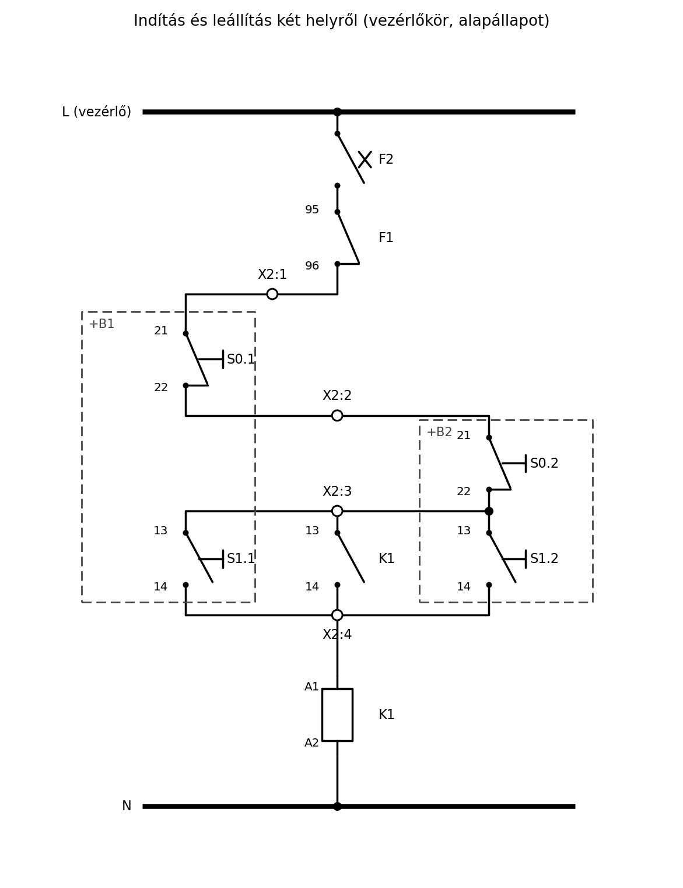
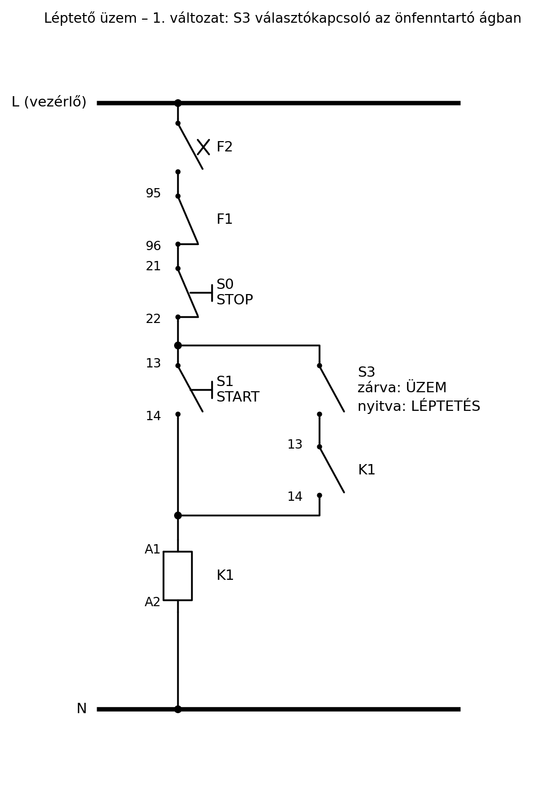
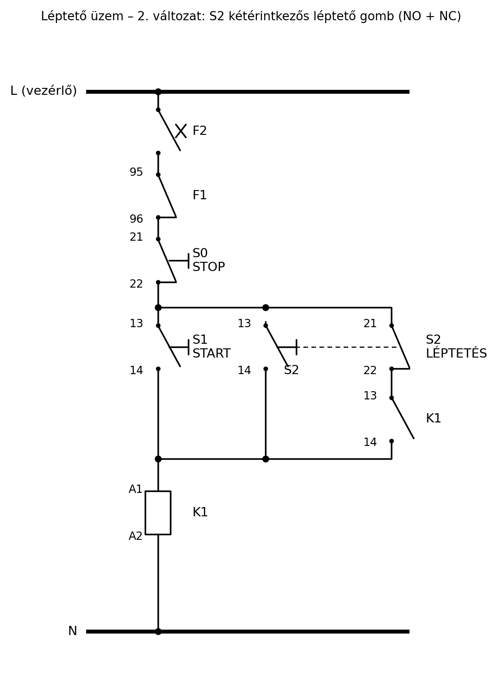

![Direktindítás főáramköre - Háromfázisú aszinkron motor közvetlen indítása: L1, L2, L3 külön vezetéken az F3 háromsarkú zárlatvédelmi készüléken (csak mágneses kioldású motorvédő megszakító vagy kismegszakító; ha helyette Q2 hőkioldós motorvédő kapcsoló áll, a külön F1 elmarad; a Q1 főkapcsoló az F3 előtt van, itt nem látszik), a K1 mágneskapcsoló főérintkezőin (1-2, 3-4, 5-6) és az F1 hőkioldó hőelemein át az M1 motor U1, V1, W1 kapcsára; a motortest a PE-re csatlakozik. A rajz szemléltető, a gyakorlati kivitelezéshez a gyártói adatlapok és a hatályos szabványok a mérvadók.](assets/ve113-diagram-1.png)
Egy műhelyben a háromfázisú aszinkron motort nem a főkapcsolóval akarjuk be- és kikapcsolni, hanem egy gombnyomással. Ha a motort közvetlenül egy nyomógombbal kapcsolnánk, akkor a gombot mindaddig nyomva kellene tartani, amíg a motornak forognia kell. Ez elfogadhatatlan: a munkásnak két kézre van szüksége, és a nyomógomb érintkezője sem erre a tartós áramra készült. A megoldás a mágneskapcsoló és az önfenntartás: a START gomb csak a vezérlőáramkörben ad jelet, a mágneskapcsoló tekercse meghúz, a főérintkezői bekapcsolják a motort, egy segédérintkezője pedig párhuzamosan kapcsolódik a START gombbal, így a gomb elengedése után is fennmarad a vezérlés. A STOP gomb megnyomásakor a tekercs áramköre megszakad, a mágneskapcsoló elenged, a motor leáll.
Ez a kapcsolás a direktindítás (közvetlen indítás) alapja, és szinte minden motorvezérlés – így a Reverzáló kapcsolás és reteszelés és a Csillag–delta indítás vezérlése – erre épül.
A direktindítós, egyirányú motorvezérlés két áramkört tartalmaz:
A főáramkör:
A rajzon a három fázis (L1, L2, L3) külön vezetéken fut a motorig, a motortest a PE-re csatlakozik. Az F3 zárlatvédelmi készülék (csak mágneses kioldású motorvédő megszakító vagy kismegszakító) megszakítja mindhárom fázist; ha a helyén Q2 hőkioldós motorvédő kapcsoló áll, a külön F1 elmarad. (A Q1 főkapcsoló az F3 előtt van; ezen a didaktikus rajzon nem szerepel, a teljes lapon igen.) A K1 mágneskapcsoló főérintkezői az indító jelet követően zárnak, a F1 hőkioldó pedig az állandó túlterhelés ellen védi a motort. A hőkioldó a fázisokban folyó áram alapján érzékeli a melegedést, és 95–96 jelű NC segédérintkezőjével megszakítja a vezérlőáramkört. A motor a három fázisra csatlakozik a kapocsdobozban (U1–V1–W1, U2–V2–W2).
A vezérlőáramkör:

A felső vonal az L1 fázis, az alsó az N nulla. A sorrend: az L1-ről először az F2 vezérlőköri biztosító, majd az F1 hőkioldó 95–96 NC érintkezője következik, utána a STOP nyomógomb S0 (NC), majd a START nyomógomb S1 és a vele párhuzamosan kapcsolt K1 13–14 önfenntartó érintkező. A két párhuzamos ág közös pontjáról a K1 tekercs (A1–A2) következik, és a kör az N felé záródik. A H1 jelzőlámpa a tekercs A1 kapcsáról külön ágon kap feszültséget (a tekercssel párhuzamos), tehát akkor világít, ha a K1 tekercs feszültséget kap.
A fenti két rajz didaktikai célból külön mutatja a fő- és a vezérlőkört. A valóságban a kapcsolószekrény dokumentációja egy kapcsolási lapon adja meg mindkettőt, főkapcsolóval, vezérlőtáppal, jelzőlámpákkal, sorkapocsjelekkel, áramút-számozással és kereszthivatkozással. Az alábbi lap (VL-01) így néz ki a valóságban; a betűjelek a tervlapok szokásos rendjét követik: Q1 a főkapcsoló, a motort a Q2 hőkioldós motorvédő kapcsoló védi túlterhelés és zárlat ellen (a lap feliratmezőjében a „B változat” a tervlapsorozat saját jelölése; a négy leágazás-változat közül ez a (C)), a vezérlőtrafó primer védelme F4, a vezérlőkör védelme F2. A példamotor 7,5 kW, 400 V Δ, 14,5 A.
![A3 fekvő tervlap kilenc számozott áramúttal. 1–3: X1 betáp-sorkapocs, Q1 lakatolható főkapcsoló, Q2 motorvédő 13–18 A beállítva 14,5 A-re, K1 főérintkezők, X1:U1 V1 W1, W1 kábel, M1 7,5 kW-os motor PE-vel. 4: F4 kétpólusú védelem, T1 400/230 V 63 VA transzformátor, 0 V a PE-re kötve, F2 a szekunder oldalon az 1-es vezérlősínre. 5–6: Q2 13–14, X2:1, S0 STOP, X2:2, S1 START és vele párhuzamosan K1 13–14, X2:3, K1 tekercs. 7–9: K1 43–44 és H1 ÜZEM, Q2 97–98 és H2 ZAVAR a +B1 kezelődobozban, H0 vezérlőfeszültség-jelző. Alul a Q2 és a K1 érintkezőtükre, jobbra lent feliratmező.](figures/img/ve113-4.png)
Hogyan olvasd a lapot?
A HTML-változatban a START, STOP, Q1, Q2 BE/KI és a Q2 kioldása (TEST) kipróbálható: az áramot vezető ágak kiemelődnek, egy érintkezőre kattintva pedig a tekercs és a tükör megfelelő sora. Próbáld ki: mi világít, ha Q2 kiold, és miért nem indul újra a motor, amikor Q2-t visszakapcsolod?
Definíció. A direktindítás (közvetlen indítás) olyan motorindítási mód, amelynél a motor a hálózatra kapcsolva azonnal, teljes feszültséggel indul. A motoroknál ez a legegyszerűbb és leggyakoribb megoldás, ha a hálózat elbírja az indítási áramlökést.
Definíció. Az önfenntartás (önfenntartó áramkör) olyan vezérlőáramkör, amelyben a mágneskapcsoló saját NO segédérintkezője (13–14) párhuzamosan van kapcsolva a START nyomógombbal. Amikor a tekercs meghúz, ez az érintkező zár, és a START gomb elengedése után is tartja a tekercs áramkörét.
Miért nyomógomb és önfenntartás, és nem kapcsoló? Az önfenntartás nem csak kényelem, hanem biztonsági funkció: feszültségkimaradás utáni újraindulás-gátlás (ellenőrizendő: MSZ EN 60204-1, 7.5).

A feszültségkimaradás hatását a direktindítás szimulátorán (feladatgyűjtemény, 32.1) a Q1 tápkapcsolóval próbálhatod ki.
Definíció. A mágneskapcsoló olyan elektromágneses kapcsolókészülék, amely a tekercs gerjesztésekor zárja a főérintkezőit, és az áramkörből elengedve (a tekercs feszültségmentesítésekor) visszatér nyitott állapotba. A főérintkezők a főáramkört, a segédérintkezők a vezérlőáramkört kapcsolják.
Szabály. A direktindítású, egyirányú motorvezérlés főáramkörében a sorrend:
Szabály. A vezérlőáramkörben a sorrend:
A STOP gomb és a hőkioldó bontója azért van a párhuzamos (START ∥ K1 13–14) ág előtt, mert így mindkettő minden üzemállapotban bontja a tekercskört: akár a START gombon, akár az önfenntartó érintkezőn át kap feszültséget a tekercs. Megnyomott STOP-nál vagy kioldott hőkioldónál a tekercs elenged, és a motor leáll. Villamosan a két soros bontó egymás közti sorrendje felcserélhető; a könyv rajzain egységesen az F1 95–96 áll elöl.
Szabvány. A gépek villamos berendezéseinek tervezésére és kivitelezésére az MSZ EN 60204-1 vonatkozik; a kapcsolókészülékekre (mágneskapcsolóra, motorvédőre) az MSZ EN 60947 sorozat, a vezérlőkészülékekre (nyomógombok, jelzőlámpák) az MSZ EN 60947-5-1. A pontos szakasz- és táblázatszámok ellenőrzendők az aktuális kiadásban. (ellenőrizendő: aktuális szabványkiadás)
Szabály. A kezelőszervek színjelölése: az INDÍTÓ (START) gomb általában zöld vagy fehér, a STOP gomb fekete vagy piros, a VÉSZLEÁLLÍTÓ gomb piros, sárga alátéten. A szín mellett a feladat és a felirat is számít; a vészleállítónak egyértelműen el kell térnie a normál kezelőszervektől. (ellenőrizendő: a gyártói katalógus és a vonatkozó gépbiztonsági szabvány)
Jelzőlámpák és nyomógombok színei (ellenőrizendő: MSZ EN 60204-1, 10.2–10.3; MSZ EN 60073):
| Szín | Jelzőlámpa jelentése | Nyomógomb jelentése | Példa |
|---|---|---|---|
| piros | vészhelyzet, veszélyes állapot | vészleállítás; STOP is lehet | „Túlmelegedés” |
| sárga | rendellenes állapot | beavatkozás rendellenes állapotban | „Motorvédő kioldott” |
| zöld | normál állapot | indítás | „Üzemkész” |
| kék | kötelező beavatkozás | nyugtázás, visszaállítás | „Szűrőcsere szükséges” |
| fehér, szürke, fekete | semleges, általános jelzés | általános (START: fehér, STOP: fekete) | „Motor jár” |
Jelzőlámpa bekötési változatok. Nem mindegy, honnan kap feszültséget a lámpa:

Lámpapróba: egy S9 gombbal minden jelzőlámpa egyszerre felgyújtható, hogy a kiégett lámpa kiderüljön; a lámpák áramkörét diódák (24 V DC) vagy a lámpamodul külön tesztbemenete választja le egymástól (ellenőrizendő: gyártói kapcsolás).
A kezelőszervek ma szinte mindig 22 mm-es moduláris kivitelűek: a fej az előlap Ø22,3 mm-es furatába kerül (a pontos furatméret a gyártói furatrajzon), hátulról egy anya vagy rögzítőadapter fogja, és az adapterre pattinthatók az érintkezőblokkok. Az alábbi robbantott ábrán felül a nyomógomb részei: 1 fej, 2 tömítőgyűrű, 3 előlap, 4 rögzítőanya, 5 rögzítőadapter, 6 záró (NO, 13–14) és 7 bontó (NC, 21–22) érintkezőblokk; alul a jelzőlámpa 8 lencséje és 9 LED-eleme az X1–X2 kapoccsal. Ugyanaz a fej tehát a ráépített blokk szerint lehet START (NO) vagy STOP (NC) – ezért kell bekötés előtt a blokk feliratát és jellegét ellenőrizni.
A nyomtatott ábrán a színek szürkeárnyalatosak, ezért a gombok alatt felirat jelzi őket; a valódi kezelőpulton a szín mellett a felirattábla is kötelező. A HTML-kiadásban a részekre mutatva megjelenik a szerepük.
Továbbvitt eredmény. Az önfenntartás elve és a K1 13–14 segédérintkező párhuzamos kapcsolása a START gombbal, valamint a STOP NC érintkező soros elhelyezése az alap, amelyre a Reverzáló kapcsolás és reteszelés, a Csillag–delta indítás vezérlése és a Kétsebességű, sorrendi és késleltetett vezérlések alfejezetek épülnek.
Hosszú szalagoknál, szivattyúknál vagy olyan gépnél, amelyet a gép mellől és egy távoli helyről (pl. a raktárból) is kezelni kell, a motort több kezelőhelyről indítjuk és állítjuk le. A szabály egyszerű: minden STOP (NC) sorosan a közös ágban, minden START (NO) párhuzamosan az önfenntartó érintkezővel; a vészleállítók is sorosan kerülnek a közös ágba. Így bármelyik STOP megszakítja a tekercskört, és bármelyik START behúzhatja a K1-et.

Kövesd a rajzon az áramutat: az L (vezérlő) sínről az F2-n és az F1 95–96-on át az X2:1-en a +B1 kezelőhelyre, ott az S0.1-en át vissza az X2:2-re, majd a +B2-n az S0.2-n át vissza az X2:3-ra (A csomópont). Az A és az X2:4 (B csomópont) között három párhuzamos ág van: S1.1, S1.2 és a szekrényben a K1 13–14.
| Kapocs | Honnan | Hová | Megjegyzés |
|---|---|---|---|
| X2:1 | F1 96 (szekrény) | +B1: S0.1 21 | a STOP-lánc eleje |
| X2:2 | +B1: S0.1 22 | +B2: S0.2 21 | a két STOP közötti pont |
| X2:3 | +B2: S0.2 22 = A csomópont | +B1: S1.1 13, +B2: S1.2 13, K1 13 | a START-ok közös pontja |
| X2:4 | +B1: S1.1 14, +B2: S1.2 14 = B csomópont | K1 14, K1 A1 | a tekercs felé |
Vezetékszám: a +B1 kezelőhelyhez 4 ér kell (X2:1, X2:2, X2:3, X2:4), a +B2-höz 3 ér (X2:2, X2:3, X2:4); fém kezelődoboznál mindkettőhöz még a PE-vezető.
Kidolgozott jelútkövetés. A motor jár (K1 az önfenntartáson át tartja magát). Valaki a 2. helyen megnyomja az S0.2-t: a közös ág az X2:2 és az X2:3 között megszakad, a K1 tekercse feszültségmentes lesz, a K1 13–14 nyit, a motor leáll. Ha közben az 1. helyen valaki START-ot nyom, az sem segít: az S1.1 az A csomópont után van, az A csomópont pedig az S0.2 nyitása miatt feszültségmentes. A STOP tehát bármelyik helyről elsőbbséget élvez.
Tipikus hibák. (1) A második STOP-ot párhuzamosan kötik az elsővel: a motor csak akkor áll le, ha mindkét STOP-ot egyszerre nyomják – ez veszélyes. (2) A második START-ot sorba kötik az elsővel: a motor csak akkor indul, ha a két START-ot egyszerre nyomják („kétkezes” indítás lesz belőle, ami nem a cél).
Feladat (B). Rajzold meg a kapcsolást három kezelőhelyre! Hány ér kell az egyes kezelőhelyekhez?
Megoldás. A STOP-lánc az 1. → 2. → 3. helyen át fut, a 3. hely S0-ja után van az A csomópont. Az 1. és a 2. helyhez 4–4 ér kell (STOP be, STOP ki, A, B), a 3.-hoz 3 ér (STOP be, A, B), fém doboznál mindháromhoz PE is.
Feladat (D, mért értékekkel). A 2. helyről nem lehet leállítani a motort. Feszültségmentesítés után az X2:2–X2:3 kapcsok között mérve az S0.2 megnyomott állapotában is 0 Ω-ot mérünk. Mi a hiba?
Megoldás. Az S0.2-nek nyomva nyitnia kellene (∞ Ω). A 0 Ω azt jelenti, hogy a vezetékek nem az S0.2 bontó (21–22) blokkjára, hanem egy záró (13–14) blokkra vannak kötve (amely nyomva zár), vagy az X2:2–X2:3 között áthidalás maradt. Javítás: a kezelőhelyen a 21–22 bontó blokkra kell kötni, az áthidalást meg kell szüntetni, majd a működést ellenőrizni.
Léptetés (angol szóval jog) az, amikor a motor csak addig jár, amíg a gombot nyomva tartjuk: elengedéskor azonnal leáll. Gép beállításánál, szerszámcserénél, szalag pozicionálásánál használjuk. A léptetéshez az önfenntartást kell megszakítani; ezt kétféleképpen szokás megoldani.
1. változat (ajánlott): választókapcsoló. Az S3 „ÜZEM / LÉPTETÉS” választókapcsoló sorosan a K1 13–14 önfenntartó ágban van. ÜZEM állásban (S3 zárva) a kapcsolás a megszokott módon önfenntartó; LÉPTETÉS állásban (S3 nyitva) az önfenntartás megszakad, és az S1 START léptető gombként működik.

2. változat: kétérintkezős léptető gomb. Külön S2 LÉPTETÉS gombot használunk, amelynek egy záró (13–14) és egy bontó (21–22) érintkezője van. A záró az S1-gyel párhuzamosan behúzza a K1-et, a bontó sorosan az önfenntartó ágban megakadályozza, hogy a K1 önfenntartásba menjen.

Vesd össze a két rajzot: hol szakad meg az önfenntartó ág az egyikben és a másikban? A 2. változatnak van egy rejtett hibalehetősége, versenyhelyzete: az S2 elengedésekor a bontó érintkező (21–22) visszazárhat, mielőtt a K1 elengedne és a K1 13–14 nyitna. Ilyenkor az önfenntartó ág egy pillanatra zárt, és a motor „bennmarad”, tovább jár. Ezért ezt a megoldást csak késleltetett nyitású segédérintkezővel vagy K2 léptető segédrelével (amely a léptetés alatt megszakítja az önfenntartást, és a K1 elengedése után enged vissza) célszerű használni; egyszerűbb és biztosabb az 1. változat választókapcsolója.
A léptetés a kontaktor szempontjából AC-4 jellegű igénybevétel (indítóáram bekapcsolása és megszakítása járó motor nélkül vagy kis fordulaton), ezért a gyakran léptetett motor kontaktorát a Készülékkiválasztás: áram, feszültség, élettartam, koordináció alfejezet szerint, AC-4 részaránnyal kell kiválasztani. Az idődiagram egyszerű: ha az S2-t (vagy LÉPTETÉS állásban az S1-et) 2 s-ig nyomjuk, a K1 és a motor is pontosan 2 s-ig kap feszültséget, utána önfenntartás nélkül elenged.
Feladat (C). Miért nem szabad a léptető gombot egyszerűen (egyetlen záró érintkezővel) az S1-gyel párhuzamosan kötni?
Megoldás. Mert a záró érintkező ugyanúgy behúzza a K1-et, mint a START, a K1 13–14 pedig önfenntartásba viszi: a motor a gomb elengedése után is tovább járna, tehát nem léptetés, hanem második START lenne belőle.
Szabvány. A gépek villamos berendezéseinek – ide értve a motorvezérléseket – tervezésére, kivitelezésére és dokumentálására az MSZ EN 60204-1 szabvány vonatkozik. A mágneskapcsolók és motorvédő kapcsolók kiválasztására az MSZ EN 60947-4-1, a nyomógombok és jelzőlámpák kiválasztására az MSZ EN 60947-5-1 szolgál. A kapocsjelölések, a színek és a rajzjelek tekintetében az MSZ EN 60617-et használjuk. A hálózati feszültségű munkavégzésre a vonatkozó villamos biztonsági szabvány, így az MSZ HD 60364-4-41 áramütés elleni védelmi fejezete is irányadó. (ellenőrizendő: aktuális szabványkiadások)
Szabály. A vezérlőáramkör feszültségét mindig a mágneskapcsoló tekercsének adattáblája határozza meg. Gyakori a 230 V AC vezérlés, de törpefeszültségű (24 V DC vagy 24 V AC) rendszerek is elterjedtek biztonsági okokból. A tanműhelyi gyakorlatok során csak törpefeszültségű vezérlést szabad építeni, kivéve, ha jogosult oktató felügyeletével, a vonatkozó szabályok szerint hálózati feszültségű munkát végzünk. (ellenőrizendő: a gyártói adatlap, a tanműhelyi szabályzat)
Szabály. A vészleállító beépítésekor azt a vezérlőáramkörben sorosan, a tekercs előtt kell elhelyezni; ez a K1 tekercsét ejti, ezért hegedt főérintkező ellen nem véd, ahhoz független második lekapcsolóelem (második kontaktor, kioldótekercses motorvédő vagy főkapcsoló) is kell (ellenőrizendő: MSZ EN 60204-1, MSZ EN ISO 13850). A vészleállító ne legyen megkerülhető, és reteszelő típusú legyen: megnyomás után kézzel kell visszaállítani. A 0, 1 és 2 leállítási kategóriát, valamint a vészleállítás és a vészkikapcsolás különbségét a Csatlakozási hely és ipari fogyasztói berendezés kialakítása alfejezet tárgyalja.
Biztonsági korlát. A feladat hálózati feszültségen csak jogosult, arra képesített személy által végezhető el, a hatályos előírások szerint. A tanuló ilyen munkát önállóan nem gyakorolhat; jelen leírás tanműhelyi (törpefeszültségű) környezetre vagy jogosult oktató felügyeletére vonatkozik. Hálózati feszültségen önállóan ne végezd.
A vezérlőkör feszültségét háromféleképpen szokás előállítani:
| Megoldás | Mire jó | Mire figyelj |
|---|---|---|
| közvetlenül L–N-ről | egyszerű, kis gépeknél | N-szakadás és földzárlat veszélye; nincs galvanikus leválasztás |
| vezérlőtranszformátor (T1) | galvanikus leválasztás; az egyik pólus földelve, így a földzárlat az F2-t oldja, és nem indít motort (ellenőrizendő: MSZ EN 60204-1, 9.4.3) | VA-méretezés a behúzási teljesítményre; primer- és szekunder védelem |
| 24 V DC tápegység | PLC-hez, érzékelőkhöz; törpefeszültség | egyenáramú tekercs szabadonfutó diódával; vezetékfeszültségesés |
A méretezés két adata. A váltakozó áramú mágneskapcsoló tekercse behúzáskor (néhány tíz ms-ig) a tartáshoz képest sokszoros teljesítményt vesz fel. A táplálásnak a tartós összteljesítményt folyamatosan, a behúzási csúcsot a feszültség megengedettnél nagyobb esése nélkül kell adnia.
Egy fémmegmunkáló műhelyben egy régebbi fúrógép motorja időnként nem állt le a STOP gomb megnyomására. A szerelő előbb a nyomógombot cserélte, de a hiba megmaradt. Ezután a mágneskapcsolót vizsgálta meg. Kiderült, hogy a K1 főérintkezői az ívhatás miatt összehegedtek: a tekercs elengedése után is zárva maradtak. A motor így tovább forgott; sem a STOP, sem a csak a K1 tekercsének áramkörét bontó vészleállító nem segített, végül a főkapcsolóval kellett leválasztani.
A tanulság: a tekercskörbe kötött vészleállító ugyanúgy a K1 tekercsét ejti, mint a STOP, ezért hegedt főérintkező ellen nem véd; a hegedés elleni vészleállítás csak akkor hatásos, ha független második lekapcsolóelemre (második kontaktor, kioldótekercses motorvédő vagy főkapcsoló) is hat – ezt a gép kockázatértékelése és az MSZ EN 60204-1 határozza meg (ellenőrizendő). A mágneskapcsolót rendszeresen ellenőrizni kell. A hőkioldó ebben az esetben nem feltétlenül véd a beragadt főérintkező ellen, ezért a karbantartási tervben a mágneskapcsoló állapotát és a főérintkezők kopását is szerepeltetni kell. A hibás mágneskapcsolót azonnal cserélni kell, nem „megjavítani”, mert a beragadt érintkező balesetveszélyes. (ellenőrizendő: a karbantartási követelmények a helyi üzemeltetési szabályzatban)
Hiba 1: Az önfenntartó érintkező hiányzik vagy rosszul van bekötve.
A motor csak addig jár, amíg a START gombot nyomva tartják. Ez akkor fordul elő, ha a K1 13–14 segédérintkezőt nem kötik párhuzamosan az S1 gombbal, vagy véletlenül NC érintkezőt használnak. A helyes megoldás: a 13–14 NO érintkezőt kell bekötni, és párhuzamosan az S1 gombbal, a STOP érintkező után.
Hiba 2: A STOP és START gomb érintkezői felcserélve.
Ha az S0 STOP-ot NO érintkezővel, az S1 START-ot pedig NC érintkezővel kötik be, a vezérlőáramkör alaphelyzetben zárva lehet, és a motor azonnal elindul; a STOP gomb pedig nem állítja le. A megoldás: a STOP gomb NC (21–22), a START gomb NO (13–14) érintkezőjét kell használni, és ezt bekötés előtt multiméterrel ellenőrizni.
Hiba 3: A hőkioldó 95–96 segédérintkezőjét elhagyják a vezérlésből.
Ilyenkor a hőkioldó kiold ugyan a főáramkörben, de a motor tovább jár, mert a tekercs áramköre nem szakad meg. Ez veszélyes, mert a túlterhelt motort nem védi semmi. A helyes gyakorlat: a hőkioldó NC 95–96 érintkezőjét sorosan be kell kötni a tekercskörbe.
Hiba 4: A vészleállító kiiktatása vagy megkerülése.
Előfordul, hogy a szerelő a vészleállítót kihagyja a körből, vagy a STOP gombbal együtt párhuzamosan köti, hogy „ne akadályozza a munkát”. Ez tilos és életveszélyes. A vészleállítót mindig sorosan kell beépíteni, és soha nem szabad áthidalni.
Gyakorlás: ennek az alfejezetnek a kidolgozott példái, gyakorlatai és megoldással ellátott feladatai az Összefoglaló feladatgyűjtemény villanyszerelő tanulóknak című kötet 32.1 szakaszában találhatók.
A direktindításos motorvezérlés a legegyszerűbb motorindítási mód: a motort a hálózatra kapcsolva teljes feszültséggel indítjuk. A főáramkörben a sorrend: főkapcsoló (Q1), zárlatvédelem (F3: motorvédő megszakító, olvadóbiztosító vagy kismegszakító), mágneskapcsoló főérintkezői (K1), hőkioldó (F1; hőkioldós motorvédő kapcsolónál elmarad, mert az már túlterhelésvédelmet is ad), motor (M1). A vezérlőáramkörben a vezérlőköri biztosító (F2) után a hőkioldó 95–96 NC érintkezője és a STOP NC gomb (S0) következik, utána a START NO gomb (S1) és a vele párhuzamosan kötött K1 13–14 NO önfenntartó érintkező, majd a K1 tekercs (A1–A2), vele párhuzamosan a H1 jelzőlámpa. Amikor a START gombot megnyomjuk, a tekercs meghúz, a főérintkezők bekapcsolják a motort, a 13–14 érintkező pedig tartja a vezérlést a gomb elengedése után. A STOP gomb vagy a hőkioldó NC érintkező nyitásakor a tekercs áramköre megszakad, a motor leáll. Továbbvitt eredmény: ezt az önfenntartó logikát és a kapocsjelöléseket (13–14, 95–96, A1–A2, 21–22) használjuk a Reverzáló kapcsolás és reteszelés és a Csillag–delta indítás vezérlése alfejezetekben.